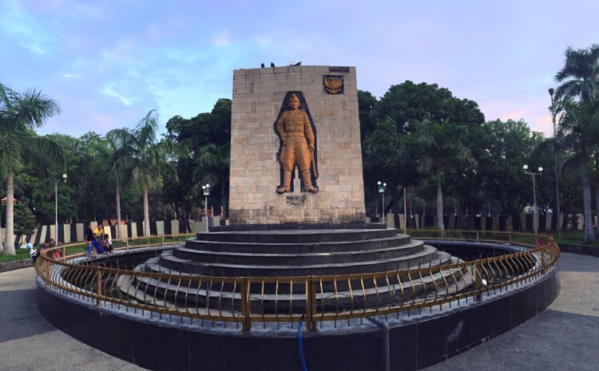

ABOUT
Kabupaten Nganjuk adalah kota kecil yang memiliki tempat wisata yang menakjubkan.
Salah satunya adalah air terjun sedudo, air tejun ini sangat terkenal.
Selain itu, Kabupaten Nganjuk dikenal sebagai kota angin karena anginnya yang cukup kencang
saat musim kemarau membuat kabupaten ini di juluki sebagai Nganjuk Kota Angin.
Selain itu Kabupaten Nganjuk juga di juluki sebagai Nganjuk Ijo Royo-Royo yang artinya tumbuh
subur dan berkembang dangan daunnya hijau segar penuh keteduhan. Dan dapat membawa manfaat bagi insan lainnya.
Ijo Royo-Royo adalah sebuah kata kiasan tentang kondisi yang sesungguhnya. Dimana daerah tersebut memiliki kepesonaan tersendiri.